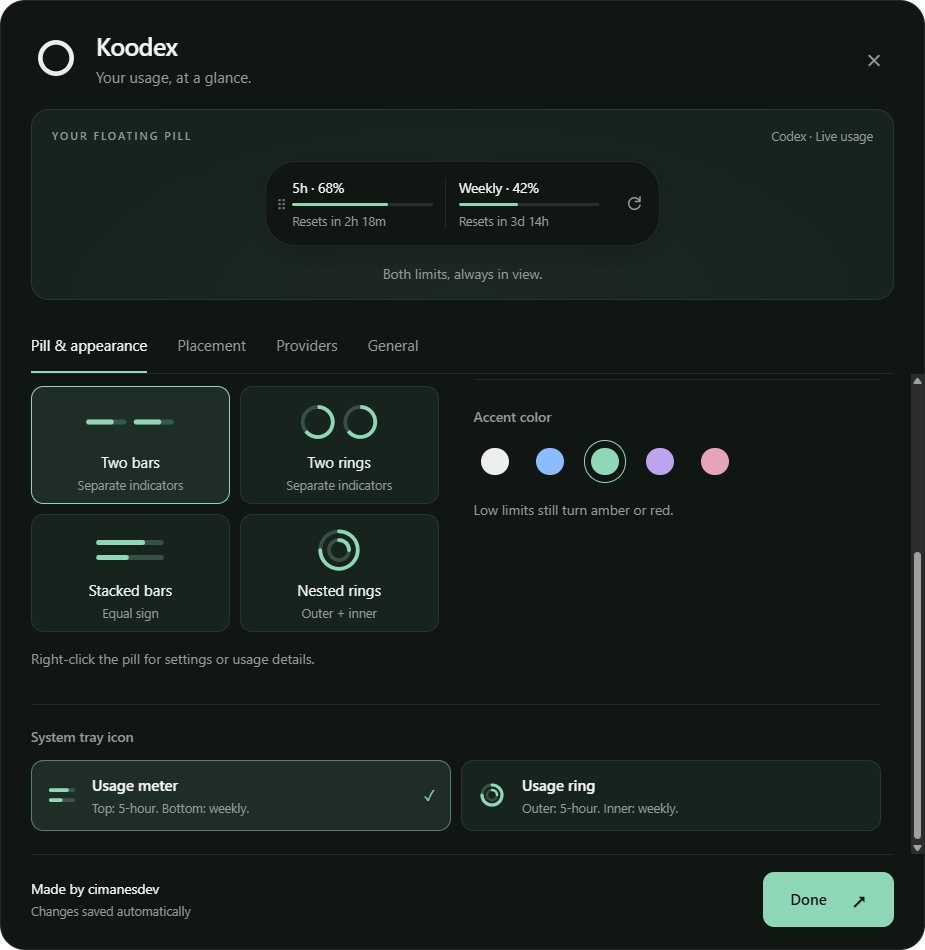

Always within reach
Keep a movable pill on your desktop, or stay minimal with the system tray icon.
 Koodex
Download
Koodex
Download
Koodex keeps your Codex limits close, without taking over your desktop. A small floating pill and tray icon show what’s left and when it resets.
Free and open source · Windows 11 x64 · Installer or portable app
See your limits without opening another window or interrupting your work.
Keep a movable pill on your desktop, or stay minimal with the system tray icon.
See your five-hour and weekly limits, remaining percentages, and reset countdowns.
Choose bars or rings, colors, placement, alerts, and how often usage refreshes.
Keep both limits in view, tuck the pill against an edge, or let the tray carry the details. Your preferences stay on your computer.
Explore all features
Install Koodex, sign in to the Codex CLI, and keep your usage in sight. Claude Code reports are available through an optional local bridge.
Get KoodexDownloadChoose the Windows installer or portable version in the latest GitHub release.
ConnectSign in to your Codex CLI separately. Koodex uses its existing local session.
Keep creatingSet your preferred look and placement. Your usage stays easy to check.
Open source, MIT licensed
Inspect the code on GitHub.
Local by default
No Koodex backend, telemetry, or advertising.
About the Windows warning
Current downloads are unsigned, so Windows may show “Unknown publisher.”